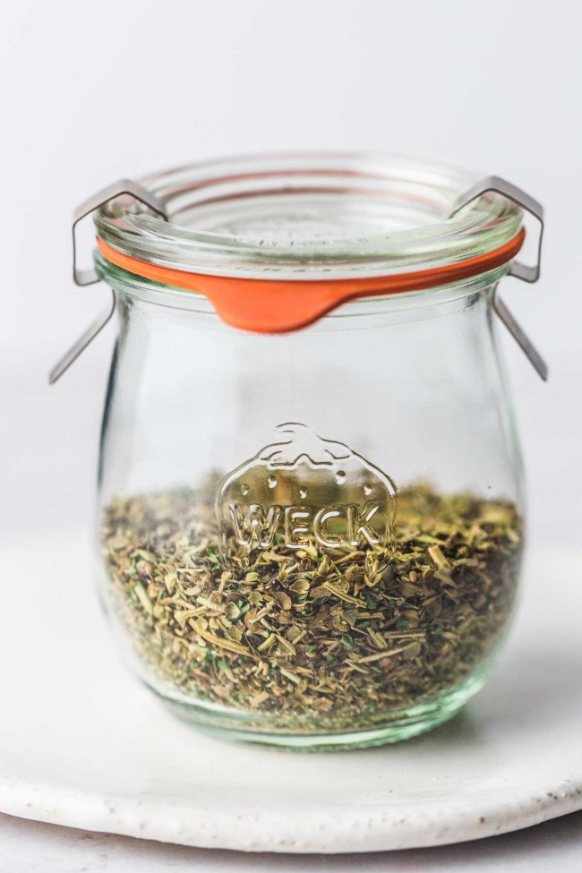

Homemade Italian Seasoning

Description:
Quick and easy homemade Italian seasoning without any added additives or sodium
Equipment:
Ingredients
- 2 tablespoons dried basil
- 2 tablespoons dried oregano
- 1 tablespoon dried rosemary
- 1 tablespoon dried thyme
- 1 tablespoon dried parsley
- 1 tablespoon dried garlic granules
Instructions
- Collect ground herbs, whisk them and place in a jar.
- If using home dried herbs, place in a grinder and pulse until you reach the desired texture.
Notes
- Store in an airtight jar in a cool dry place for up to a year.
- you can easily double or triple this recipe.